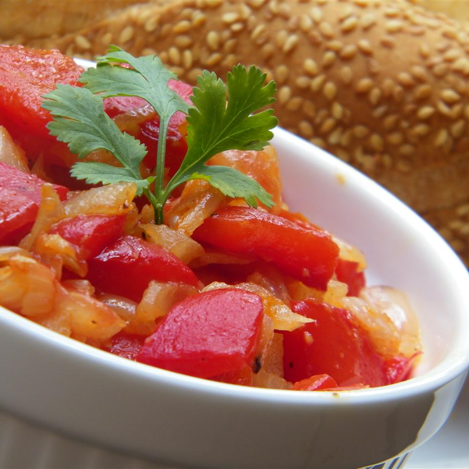

Algerian Flafla (Bell Pepper Salad)

Description
This dish is great for summer meals. Bell peppers are roasted and then twice-cooked with other vegetables to make
a sweet and rich treat. Serve with a baguette, and use the bread as your fork, Algerian-style.
ingredients
- 3 green bell peppers
- 1 tablespoon olive oil
- 1 tablespoon finely chopped red onion
- 1 clove garlic, minced
- salt and pepper to taste
- 1 roma (plum) tomato, diced
Directions
- Step 1
Preheat an oven to 450 degrees F (230 degrees C). Place the whole peppers on aluminum foil. Bake until the skin is spotted black and the peppers are soft, 30 to 45 minutes, turning the peppers once if necessary.
- Step 2
Remove peppers from the oven and set aside to cool for 10 minutes. Peel off the skin and remove the stem and seeds. Chop the roasted peppers into half-inch pieces.
- Step 3
Heat the olive oil in a skillet over medium heat. Stir in the onion and cook, stirring frequently, until the onion has softened and turned translucent, about 5 minutes. Add the garlic, salt, and pepper; stir in the chopped peppers and tomato. Cook over medium heat, stirring occasionally, until the tomato is soft and the mixture is well incorporated, about 5 minutes.